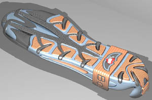

V.
Ulusal Genç Yetenekler Ayakkabý Tasarým Yarýþmasý'nda bayan
ayakkabý dalýnda 2. dereceyi elde eden Gökþin Özgören'e ait
spor ayakkabý tasarýmýn 3D modellenmesi ve prototipinin imalatýnda
Cadem A.Þ. sponsorluðunda ATOS II, FreeForm sistemi ve ThermoJet
3D printer kullanýldý: V.
Ulusal Genç Yetenekler Ayakkabý Tasarým Yarýþmasý'nda bayan
ayakkabý dalýnda 2. dereceyi elde eden Gökþin Özgören'e ait
spor ayakkabý tasarýmýn 3D modellenmesi ve prototipinin imalatýnda
Cadem A.Þ. sponsorluðunda ATOS II, FreeForm sistemi ve ThermoJet
3D printer kullanýldý:
www.cadem.com.tr/haber/aty03.html
Türk
Ayakkabý Sektörü Araþtýrma Geliþtirme ve Eðitim Vakfý TASEV'in,
Türkiye Ayakkabý Sanayicileri Derneði TASD ve Mimar Sinan
Üniversitesi Endüstri Ürünleri Tasarýmý Bölümü iþbirliðiyle
düzenlediði "Ulusal Genç Yetenekler Ayakkabý Tasarým
Yarýþmasý 2003'de, genç tasarýmcýlar "Kadýn", "Erkek"
ve "Terlik" kategorilerinde yarýþtý.
Yarýþma'ya
sunulan tasarým projeleri ön bir elemeye tabi tutularak her
kategoriden en iyi 10 tasarým seçildi. Ardýndan, 1. jüri tarafýndan
deðerlendiren bu 10 tasarýmdan 5'i prototipi imal edilmek
üzere seçildi. Prototipi tamamlanan tasarýmlar da 2. jüri
tarafýndan son bir elemye tabi tutularak dereceye girenler
belirlendi. 11 Aralýk'daki ödül türeni ardýndan dereceye giren
tasarýmlar 11-14 Aralýk 2003 tarihlerinde düzenlenen AYMOD
Ayakkabý Moda Fuarý süresince sergilendi.
Yarýþmada,
Gökþin Özgören, bayan ayakkabý dalýnda BOXERIN isimli spor
ayakkabý tasarýmýyla 2. dereceyi elde etti. Bu ayakkabý tabanýnýn
3 boyutlu tasarýmý ve modelinin imal edilmesi ise Cadem A.Þ.
sponsorluðunda yapýlmýþtýr.
FreeForm
Sistemi ile 3D modellemeye baþlangýç olarak, alt ve yan görünüþten
ibaret iki boyutlu bir jpg dosyasý ve bu tasarýmýn uyarlanmasý
gereken bir ayakkabý kalýbý (talaþlý imalat ile imal edilmiþ
plastik model) kullanýldý.
Bu
ayakkabý kalýbýnýn tüm yüzeyi ATOS II sistemi ile kýsa sürede
ve hassas bir þekilde taranarak STL formatýnda FreeForm sistemine
aktarýlmýþtýr. Yapýlan üç boyutlu tasarýmýn ayakkabý kalýbýna
uyum saðlayabilmesi için kalýp modeli üzerine 2D resimlerin
refransý doðrultusunda 3D modelleme yapýlmýþtýr. Foto-gerçekçi
görüntüleme için boyama ve "rendering" iþlemleri
de FreeForm Sistemi'nde gerçekleþtirilmiþtir.
FreeForm
Plus Modelleme Sistemi, voxel tabanlý modelleme altyapýsý
ve dokunma hissiyle tasarýma imkan veren "Phantom Arm"
ile karmaþýk geometriye sahip ayakkabý tabanlarýnýn tasarýmý
için eþsiz imkanlar sunar...
Ýlk
fiziksel model ise ThermoJet ile inþa edilmiþtir. Mum benzeri
bir termopolimer ile üretilmiþ olan ThermoJet modeli, silikon
kalýplamayla esnek bir malzemeden üretilerek boyanmýþtýr (silikon
kalýplama, boyama, üst derinin hazýrlanýp dikilmesi ve tüm
parçalarýn entegrasyonu Gökþin Özgören ve Cabani gibi diðer
sponsorlarý yardýmýyla yapýlmýþtýr).
Cadem
A.Þ. web sitesinden diðer güncel haberler:
(26.01.04)
Referanslar sayfamýz güncellendi; Gün geçtikçe artan sayýda
CATIA, FTI, GOM, 3D Systems ve diðer ürün ve hizmetlerimizle
ilgili müþterilerimize ait son listeye bu sayfadan eriþebilirsiniz
www.cadem.com.tr/referanslar.html
(07.11.03)
SensAble Technologies, dijital ortamda dokunma hissi ile konsept
fazýnda modellemeyi saðlayan FreeForm® ConceptT ve beraberinde
kullanýlan PHANTOM® OmniT 'yi piyasaya sürdü:
www.cadem.com.tr/haber/freeform-concept.html
(13.10.03)
Ayakkabý sektörü için örnek çalýþma: GOM/ ATOS II, SensAble
FreeForm ve 3D Systems / ThermoJet sistemlerinin karmaþýk
geometriye sahip spor ayakkabý tabanlarýnýn yeniden tasarým
ve hýzlý model imalatýnda baþarýyla kullanýmýný gösteren örnek
bir çalýþmamýz web sitemize eklendi
www.cadem.com.tr/cozumler/fwcs01.html
(16.09.03)
14 Eylül 2003 tarihinde sona eren ADESIGN FAIR 2003 Uluslararasý
Tasarým Fuarý'nda firmamýzýn sunduðu yeni tasarým, tersine
mühendislik ve prototip imalat teknolojilerine yoðun ilgi
gösterildi:
www.cadem.com.tr/haber/adesignfair2003-yapildi.html
Ýrtibat:
Cadem CAD/CAM Destek Merkezi A.Þ.
www.cadem.com.tr
Metropol Center 32/52 Merter / Ýstanbul
Tel: (212) 481 75 09
|